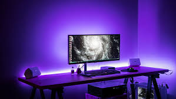
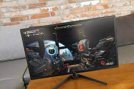
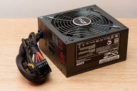

Computer Parts
  A computer consists of four major parts: the input, output, CPU (central processing unit), and memory. Input consists of anything you will add into the computer (microphone, keyboard, mouse, scanner), and output is how the computer gives back to you (think screen, speakers, etc.). The CPU or central processing unit is located on the motherboard and is the part of the computer where all that input/output information gets sent to the proper place. Memory, commonly referred to as RAM (random access memory), as you may already know, is where the information is stored.There are three major pieces of hardware in a computer. The motherboard is the most important part of a computer and contains many subsystems such as the central processor (CPU), input/output chips as well as memory and application controllers. An Expansion Card fits into the expansion slot in a computer and is where you can add additional capabilities such as for video or graphic performance. Finally, and very importantly, is the power supply which supplies electric power to the electrical load of a computer....For more information click here